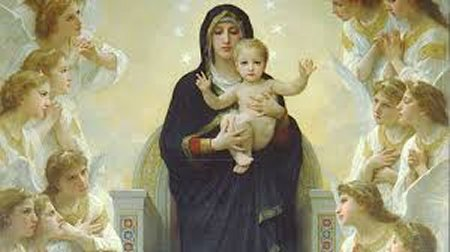

“O NOME DE
MARIA”
JESUS E MARIA
Glorioso e admirável é o Nome da
SANTÍSSIMA VIRGEM MARIA! Quem na hora da morte tiver a felicidade de invocá-lo, afugentará
todos os demônios que desaparecerão apavorados, deixando em paz sua alma. Confirma
Santo Afonso Maria de Ligório:
“As potestades infernais detestam e teme o Nome e o Patrocínio de MARIA, NOSSA SENHORA.
Só pela invocação do Nome da SANTA MÃE DE DEUS pelos seus servos e devotos, é
suficiente para fazer tremer o inferno e dar um sumiço no maligno”.
invocá-lo, afugentará
todos os demônios que desaparecerão apavorados, deixando em paz sua alma. Confirma
Santo Afonso Maria de Ligório:
“As potestades infernais detestam e teme o Nome e o Patrocínio de MARIA, NOSSA SENHORA.
Só pela invocação do Nome da SANTA MÃE DE DEUS pelos seus servos e devotos, é
suficiente para fazer tremer o inferno e dar um sumiço no maligno”.
Constam dos relatórios das
Missões Católicas no Japão, fatos interessantes e de valor incontestáveis. Certo
dia surgiu a um cristão na Comunidade Religiosa Missionária de Tókio, muitos
demônios sob a forma de animais ferozes, que ameaçadoramente se aproximaram.
Ele, controlando o susto e a surpresa disse: “Não tenho armas para vos enfrentar. Se o ALTÍSSIMO
lhes permitiu estar aqui, de mim fazei o que lhes aprouver. Contudo invoco em
minha defesa os dulcíssimos nomes de JESUS e de MARIA, aos quais sempre amei.”
Mal terminou de pronunciar aqueles Nomes
Sagrados, o chão se abriu e a terra sorveu aqueles espíritos soberbos, que
desapareceram soltando gritos terríveis.
INTERCESSÃO PRECIOSA
A ausência de uma fé sólida ou
de um verdadeiro conhecimento religioso pode ensejar a origem de uma pergunta:
“Em que sentido é
necessária a intercessão de MARIA?”
A intercessão de MARIA
SANTÍSSIMA é de grande utilidade e santa, e por isso, só podem duvidar aqueles
que não têm fé. Porém, o que julgamos necessário evidenciar e tornar conhecida,
é se a intercessão de NOSSA SENHORA “também é necessária a nossa salvação...” Vamos apreciar as palavras de Santo Afonso Maria de Ligório que diz
o seguinte: “É necessária
sim, mas não absoluta". A origem da necessidade
está justamente na própria Vontade de DEUS. O SENHOR quer que pelas Mãos de MARIA,
passem todas as Graças que ELE nos concede. Nós sabemos e confessamos que DEUS é
a origem de todos os bens, e é o SENHOR absoluto de todas as Graças. MARIA,
NOSSA SENHORA é uma criatura de DEUS, a mais bela, a mais bem dotada e tudo
recebe de DEUS. Muito mais que as outras criaturas ELA soube amar e honrar o
nosso DEUS, sendo por isso escolhida para a MÃE do FILHO DE DEUS, SALVADOR de
toda humanidade. Por todas estas razões, querendo a Vontade Divina exaltá-la de
modo extraordinário, determinou que pelas Mãos da SANTA MÃE passassem e fossem
concedidas todas as Graças e Mercês, as almas remidas. DEUS CRIADOR não deixa
nenhuma dúvida: “JESUS
CRISTO é o único Medianeiro de Justiça”,
porque pelos seus méritos nos obtêm a Graça e a Salvação Eterna. Mas especificou
que “MARIA é a Medianeira
de Graças”, e como tal, pede a DEUS por
nós em nome de JESUS CRISTO, e tudo nos alcança pelos méritos reais do Seu próprio
FILHO, que é o FILHO DE DEUS.
“Assim sendo, a intercessão de MARIA devemos, de fato e de verdade, todas as graças
que solicitamos para a nossa vida”.
Nesta realidade, não há nada contrário aos Sagrados Dogmas da Santa Sé
Apostólica. O que existe está de plena conformidade com os sentimentos da Santa
Igreja. Nas orações aprovadas, a Igreja nos ensina a recorrer sempre à MÃE DE
DEUS e invocá-la como
“salvação dos doentes, refúgio dos pecadores, auxílio dos cristãos, vida e esperança
nossa”. Nas festas da SANTÍSSIMA VIRGEM MARIA,
muitas das palavras do Ofício foram extraídas do Livro Eclesiástico, deixando-nos
entender que em NOSSA SENHORA acharemos toda esperança: “... em MIM há toda a esperança da vida e da virtude.”
(Eclo 24,25) E encontramos também nos
Provérbios: “Quem ME acha
(diz a SANTÍSSIMA VIRGEM MARIA),
, achará a vida e haurirá do SENHOR a Salvação”.
(Pr 8,35). E ainda, no Livro Eclesiástico encontramos
outra linda citação: “Aquele
que me ouve (diz NOSSA SENHORA),
não será confundido; e os que operam
por MIM não pecarão; Aqueles que me esclarecem
(que divulgam e buscam explicar as minhas palavras) terão a Vida Eterna”.
(Eclo 24, 30-31).
Somente com estes poucos
exemplos se torna evidente e muito necessária a cada um de nós, a intercessão
de MARIA, NOSSA SENHORA, junto a DEUS, para nos alcançar os benefícios
necessários a nossa existência.
MEDIANEIRA DE TODAS AS GRAÇAS
Procurando alongar os argumentos
para deixar absolutamente transparente e mais clara a Vontade Divina, veja o que
diz São Bernardo de Claraval:
“DEUS plenificou MARIA com todas as Graças para que por intermédio DELA a humanidade
recebesse todos os bens que lhes são concedidos”. E explica: “Antes
do nascimento de MARIA, não existia uma torrente de graças tão disponível, porque
não havia esse desejado
“Aqueduto”.
MARIA, NOSSA SENHORA foi dada ao
mundo, a fim de que por SEU intermédio, como por um maravilhoso canal, chegasse a todos
nós sem cessar uma torrente caudalosa de Graças Divinas. Como se ELA fosse um encantador
“Aqueduto” por onde fluem as preciosas Graças de DEUS para toda a humanidade
suplicante. Os demônios se apavoraram e compreenderam que a única solução era destruir
aquele “maravilhoso Aqueduto”.
Mas como? Envidando todos os
esforços para acabar com o cultivo e a fervorosa prática da Devoção à MÃE DE DEUS,
isolando-a da humanidade. Pois, cortado este “Canal de Graças”,
muito fácil lhes tornaria a conquista das almas”.
Continua São Bernardo: “Consideremos,
portanto com que afeto e devoção o SENHOR DEUS quer que nós honremos esta RAINHA! Pois nas
mãos da SANTÍSSIMA VIRGEM MARIA depositou a plenitude de todos os bens, para nos
tornar cientes de que “toda esperança”,
“toda graça”, “toda salvação”,
chegam à humanidade suplicante pelas carinhosas MÃOS DELA, de MARIA”.
A mesma coisa confirma Santo
Antonio, declarando que “todas
as “misericórdias” dispensadas
à humanidade chegam através de MARIA, NOSSA SENHORA”.
Também MARIA é comparada a
“Lua”,
pois estando entre o Sol e a Terra, a Lua dá a Terra o que recebe do Sol. Do mesmo modo
“MARIA, a incomparável LUA”,
recebe os Celestes influxos das Graças de DEUS (o SOL todo-poderoso),
para transmiti-los a Terra (a todos nós, a humanidade suplicante).
Por outro lado, a Igreja também
se manifesta nas suas orações, denominando a SANTÍSSIMA VIRGEM MARIA de
“Porta do Céu”, e afirma categoricamente, que ninguém consegue entrar no Céu senão passar pela
“Porta, que é MARIA”.
De todas estas considerações,
não é difícil concluir que se tornou um sentimento universal da Igreja de que a
intercessão de MARIA não somente nos é útil, mas também necessária. Evidentemente não
“necessária absoluta”,
como foi explicado, porque necessária e absoluta é somente
a Mediação de JESUS CRISTO, nosso SALVADOR e REDENTOR. Mas “necessária moralmente como maternal auxílio insubstituível”
porque DEUS determinou que todas as suas Graças
dispensadas à humanidade, passassem obrigatoriamente pelas MÃOS DE MARIA,
SUA MÃE.
ADVOGADA PODEROSA
 São Bernardo de Claraval afirmou:
“Tudo se faz, se VÓS, querida MÃE,
o quereis. Basta a VOSSA Vontade para que tudo se faça. Quereis elevar a uma alta
santidade o pecador mais terrível e abominável? A força do VOSSO Amor consegue
convertê-lo, porque só a VOSSA Vontade é suficiente para acontecer o fato. Basta
querer a nossa salvação e nós mesmos, não conseguiremos morrer sem a conversão
do coração”.
São Bernardo de Claraval afirmou:
“Tudo se faz, se VÓS, querida MÃE,
o quereis. Basta a VOSSA Vontade para que tudo se faça. Quereis elevar a uma alta
santidade o pecador mais terrível e abominável? A força do VOSSO Amor consegue
convertê-lo, porque só a VOSSA Vontade é suficiente para acontecer o fato. Basta
querer a nossa salvação e nós mesmos, não conseguiremos morrer sem a conversão
do coração”.
MARIA, NOSSA SENHORA explicava
diretamente a Santa Brígida:
“Devo ser rogada, para que possa querer; porque o que EU quero é necessário que
se faça”.
Enquanto MARIA viveu na Terra,
seu constante pensamento depois da glória de DEUS era ajudar os necessitados.
Sabemos que desde então já gozava do especial privilégio: “DELA ser ouvida em todas as coisas que pedia ao SENHOR”.
Por exemplo, o acontecimento que se passou nas Bodas
de Cana na Galileia, quando acabou o vinho no auge da festa de casamento. ELA observou e
cheia de compaixão pela dificuldade dos nubentes, falou com JESUS. ELE, que também já
havia observado a ocorrência, carinhosamente lembrou-lhe: “Minha hora ainda não chegou”. (JESUS não havia começado com as pregações da Boa Nova, assim como, também
não havia iniciado com as maravilhosas manifestações sobrenaturais no meio do povo).
Todavia, ELA conhecedora da imensa bondade albergada no Coração do Seu Divino FILHO,
disse aos servos: “Fazei tudo
o que ELE vos disser”. E então aconteceu
aquele maravilhoso milagre que São João descreveu no Evangelho:
“a água que JESUS mandou os servos
encher as talhas se transformou num delicioso e inigualável vinho”.
(Lc 2, 1-11)
MÃE DE DEUS
Indubitavelmente é certo, que
não há criatura que nos possa obter tantas misericórdias como a VIRGEM MARIA.
Não só DEUS a honra como Sua Serva predileta, mas, sobretudo como Sua verdadeira
MÃE, que ELA é. Uma só palavra dos seus lábios é suficiente para o FILHO JESUS
atendê-LA com atenção e disponibilidade. Também as preces de MARIA são como
verdadeiros rogos de MÃE, e tem o efeito de uma carinhosa ordem, sendo
impossível que não seja atendida pela grandeza incomensurável da obediência e do
amor do SEU FILHO JESUS. Por esta razão, São Germano animando os pecadores para
que buscassem o caminho da conversão do coração através de NOSSA SENHORA, lhes
falava assim: “MARIA além
da grandeza do Seu Amor, tem para com DEUS a autoridade de ser Sua MÃE, e por isso,
consegue do SENHOR o perdão aos mais abjetos pecadores. Porque em tudo o SENHOR
a reconhece por Sua verdadeira MÃE, e não quer, de nenhum modo, deixar de
atender a cada desejo DELA”.
E porventura, não é coisa digna
e absolutamente natural da benignidade do SENHOR zelar com tanto empenho a honra
da Sua MÃE? JESUS mesmo, quando estava realizando as suas pregações chegou a
dizer: “Não penseis que vim
revogar a Lei e os Profetas. Não vim revogá-los, mas lhe dar pleno cumprimento”.
(Mt 5,17) E entre as Leis vigentes na época
não existia aquela que mandava
“honrar os pais”? Verdade é, que a grandeza
do amor que sempre uniu MARIA a JESUS e a SANTÍSSIMA TRINDADE é tão imenso e tão presente,
que “ELES estão sempre ligados,
UM aos OUTROS”, fazendo com que o entendimento
entre ELES sempre seja perfeito, dispensando qualquer palavra, e se manifestando
apenas pelo olhar.
MARIA AMA DE MODO ESPECIAL OS
PECADORES
Se em todos os lugares, nas
Igrejas e nas residências só se falassem DELA, de NOSSA SENHORA, se as pessoas
corajosamente entregassem sua vida se necessário fosse, para defendê-LA com competência
e disposição, tudo isso ainda seria muito pouco em comparação com a gratidão, a
disponibilidade e a grandeza do amor que devemos a MARIA, NOSSA SENHORA. Pois é
o SEU amor puro, autêntico e imaculado, que ELA consagra as pessoas, mesmo aos mais
infelizes pecadores, quando decidem LHE demonstrar algum afeto e cultivam a SUA devoção.
Se aquele que LHE serve é um pecador, a VIRGEM SANTÍSSIMA empenha toda a SUA poderosa
intercessão para lhe obter o perdão do SEU DIVINO FILHO. Tão grande é SUA bondade e
tão imensa a SUA misericórdia, que não repele quem a invoca. Na qualidade de nossa
amantíssima Advogada oferece a DEUS as preces dos SEUS servos, seja quem for; pois
como o SEU FILHO JESUS intercede por nós junto ao PAI ETERNO, assim também ELA
intercede por nós junto ao SEU FILHO. E também, não se cansa de tratar com o PAI
e com o FILHO, o sério assunto da vida da humanidade e da nossa salvação eterna.
entregassem sua vida se necessário fosse, para defendê-LA com competência
e disposição, tudo isso ainda seria muito pouco em comparação com a gratidão, a
disponibilidade e a grandeza do amor que devemos a MARIA, NOSSA SENHORA. Pois é
o SEU amor puro, autêntico e imaculado, que ELA consagra as pessoas, mesmo aos mais
infelizes pecadores, quando decidem LHE demonstrar algum afeto e cultivam a SUA devoção.
Se aquele que LHE serve é um pecador, a VIRGEM SANTÍSSIMA empenha toda a SUA poderosa
intercessão para lhe obter o perdão do SEU DIVINO FILHO. Tão grande é SUA bondade e
tão imensa a SUA misericórdia, que não repele quem a invoca. Na qualidade de nossa
amantíssima Advogada oferece a DEUS as preces dos SEUS servos, seja quem for; pois
como o SEU FILHO JESUS intercede por nós junto ao PAI ETERNO, assim também ELA
intercede por nós junto ao SEU FILHO. E também, não se cansa de tratar com o PAI
e com o FILHO, o sério assunto da vida da humanidade e da nossa salvação eterna.
Existem pessoas de pouca fé, que
muitas vezes conduzidas por sua existência de pecado, titubeiam e colocam em
dúvida o poder da Misericórdia de MARIA, não acreditam que ELA proceda assim. E
duvidando chegam a pensar:
“Será que ELA realmente conseguirá o perdão de DEUS para mim, e me ajudará no
caminho da minha conversão?" E procedem
assim, porque estando com a consciência carregada de tantos crimes, desconfiam
da compaixão de NOSSA SENHORA em ajudá-los. Entretanto a MÃE DE DEUS é também
a Nossa MÃE. MARIA cultivou um imenso amor ao SEU FILHO JESUS, o qual sempre
cresceu de maneira impressionante e concreta, durante a convivência apaixonada
e harmoniosa na vida da Sagrada Família entre nós. Quando JESUS por Amor Infinito,
entregou a própria vida para consolar o PAI ETERNO, redimindo corajosamente a humanidade
pecadora de todas as gerações, com SEUS terríveis sofrimentos, abomináveis angústias
e SUA cruel morte na CRUZ, MARIA seguindo o exemplo maravilhoso do SEU DIVINO FILHO
JESUS, acolheu verdadeiramente a maternidade de cada um de nós, que LHE foi concedida
por ELE MESMO, SEU FILHO, nos derradeiros instantes da SUA VIDA pregado na Cruz. JESUS
disse: “Mulher, eis o teu filho!”
(Jo 19, 26)(Pela Vontade misericordiosa de JESUS,
ELE colocou João, o seu Discípulo Amado, naquele derradeiro momento, representando
a humanidade de todas as gerações, e colocou sua querida MÃE, para ser MÃE de todos nós).
E então, o Amor de MARIA cresceu firme e misericordioso em direção ao infinito.
Depois no Céu, junto a adorável SANTÍSSIMA TRINDADE, NOSSA SENHORA generosamente
fez dilatar ainda mais, as dimensões inconcebíveis do seu amor, com aquele singular
e perfeito carinho de MÃE, derramando sobre cada um de nós, os SEUS filhos, a grandeza
incalculável das SUAS preciosas graças e virtudes. Por isso, grande e singular
é o privilégio que ELA tem diante do SEU FILHO JESUS, alcançando DELE, com SEUS
Maternais rogos, tudo quanto quer para nos ajudar, a todos nós os pecadores.
MARIA é nossa MÃE e quer a nossa
salvação. Não duvidemos “NUNCA”
da SUA bondade, de SUA gentileza e da grandeza
infinita da SUA misericórdia. Ao contrário, a humanidade deve ser mais fiel e amorosa,
e penhoradamente deve agradecer ao SENHOR e a SUA DIVINA MÃE todos os cuidados e
a permanente intercessão que ELES exercitam em benefício de cada um de nós. Assim
como, todos os Santos são bons amigos, e também intercedem por nós junto a DEUS,
lembremos que ELA, MARIA, é a mais poderosa, a mais amorosa e a mais solícita
de todos em nos ajudar, de nos conceder o bem necessário a nossa
existência, porque ELA é a nossa MÃE.
ADVOGADA MISERICORDIOSA
Não há dúvida, JESUS é o único
Medianeiro de Justiça entre DEUS e a humanidade, o único que em virtude dos
próprios méritos pode nos obter a graça e o perdão conforme as SUAS promessas,
e também por SUA própria Vontade. Mas como em JESUS CRISTO a humanidade reconhece
e teme a SUA Majestade Divina, aprouve a DEUS nos dar outra Advogada, a quem
pudéssemos recorrer com mais liberdade, com maior confiança e menor receio. E
temos esta Advogada em MARIA, NOSSA SENHORA, que é insuperável em qualidade
e méritos, além de ser a mais poderosa para a Divina Majestade, e a mais
misericordiosa para toda a humanidade. Por essa razão tão natural, as pessoas
devem recorrer a MARIA, alegre e confiantemente, que por SUA eficaz intercessão
ELA salvará, todos aqueles que crêem no SEU Maternal Amor.
E repetimos com o Santo: Nós
cremos MARIA, nossa Querida MÃE e MÃE de nosso DEUS, que abristes para o mundo
a fonte de misericórdia e piedade, e por isso, longe esteja de nós o pensamento
de que a SENHORA possa fechar o VOSSO compassivo coração perante um miserável
pecador. Assim, já que escolheste o lugar de ser a medianeira entre DEUS e a
humanidade, nós VOS suplicamos a VOSSA preciosa assistência de MÃE, que pela
VOSSA imensa bondade é incomparavelmente muitas e muitas vezes maior, que todos
os nossos pecados.
 MARIA RECONCILIA OS PECADORES
COM DEUS
MARIA RECONCILIA OS PECADORES
COM DEUS
A “graça de DEUS”
é um tesouro muito grande e muito desejável por todas as almas. Diz Santo Afonso Maria
de Ligório, que o ESPÍRITO SANTO lhe chama de “tesouro infinito”, pois por meio dela
somos elevados à honra de “amigos
de DEUS”. Por essa razão o DIVINO SALVADOR diz
aos que se acham no “estado de
graça”: “Vós sois meus amigos, se praticais o que VOS ordeno...” (Jo 15, 14). Entretanto a realidade do pecado é terrível e o profeta Isaias comenta:
“... São as vossas iniquidades que
criaram um abismo entre vós e o VOSSO DEUS” (Is 59, 2).
O pecado transforma a alma e a torna objeto de ódio para DEUS. A alma de amiga se converte
em inimiga do SENHOR. E em consequência, o pecador torna-se arredio e mesquinho. A busca
do caminho da conversão do coração terá que ser trilhado vigorosamente com plena vontade,
começando pelo cultivo da modéstia, da simplicidade e da oração, tudo com
objetividade e com a maior convicção. E se por causa das muitas transgressões
cometidas temes a vingança de DEUS, humilde e sinceramente arrependido,
recorra a MARIA, NOSSA SENHORA, que é a esperança de
todos os pecadores.
UM ACONTECIMENTO COMPROVADOR
Descreve os anais da Companhia
de Jesus em Portugal, que vivia em Bragança um rapaz que era Congregado Mariano.
Infelizmente, deixou a Congregação e levou uma vida muito perdida. Chegou ao
ponto de pensar em se suicidar. Entretanto, no auge do seu desespero, decidiu
recorrer a NOSSA SENHORA, rezou muito e derramando doloridas lágrimas suplicou
auxilio e inspiração para a sua vida. Estando diante da imagem da SANTÍSSIMA
VIRGEM MARIA teve a exata impressão de ouvir palavras no fundo do seu coração:
“Que queres fazer? Queres
perder ao mesmo tempo o seu corpo e a sua alma? Vai a Igreja, faça a sua confissão
e volte para a Congregação Mariana”. O rapaz
caiu em si e se ajoelhou completamente arrependido dos seus muitos pecados,
chorou bastante, e ali mesmo, no seu quarto rezou e agradeceu a MÃE DE DEUS
aquela preciosa graça. Seguiu o conselho de NOSSA SENHORA e mudou de vida.
MARIA, MÃE MISERICORDIOSA
Santo André Avelino chama MARIA
de administradora dos bens do Paraíso, porque continuamente ELA está às voltas
com a Misericórdia, impetrando graças para todos, tanto para os justos como para
os pecadores. Verdadeiramente os olhos da SANTÍSSIMA RAINHA DE MISERICÓRDIA,
estão voltados tanto sobre os justos como sobre os pecadores. São os olhos de
mãe, de mãe carinhosa e preocupada que vela não só para que o filho não caia,
mas, sobretudo, mãe que se apressa também em levantá-lo após a experiência da
queda.
É exatamente por isso que o
demônio se empenha e trabalha vigorosamente com suas tramas, a fim de que os
pecadores, depois de perderem a graça de DEUS pelos pecados cometidos, percam
também a devoção a NOSSA SENHORA.
Entretanto é importante não
confundir o misericordioso auxilio de NOSSA SENHORA, com o excesso de confiança
do transgressor, permanecendo e exercitando o pecado, por considerar que a
intercessão de MARIA age de tal modo, que sempre livra do inferno até aqueles
que morrem em pecado mortal. Não é assim. Quem deseja a salvação, tem que
abandonar a sua vida pecaminosa e pedir o auxílio a NOSSA SENHORA, para que ELA
alcance de DEUS o perdão de seus muitos pecados e a necessária santidade para a
sua existência. Diante deste desejo do pecador é que nossa MÃE SANTÍSSIMA
intercede e lhe auxilia, conseguindo de DEUS as graças para o bem-estar da sua
vida.
MARIA SOCORRE OS SEUS DEVOTOS
NO PURGATÓRIO
ELA, nossa querida MÃE
SANTÍSSIMA, não socorre os seus devotos só no mundo, mas também as almas que
estão no Purgatório são assistidas e consoladas com sua proteção. Por terem
essas almas mais precisão de socorro, empenha-se a MÃE DE MISERICÓRDIA com zelo
ainda maior, para auxiliá-las.
NOSSA SENHORA revelou a Santa
Brígida: “EU sou a MÃE de
todas as almas do purgatório; pois, por minhas orações lhes são constantemente
mitigadas (diminuídas) as penas que mereceram pelos pecados cometidos durante a vida”.
NOSSA SENHORA, por Sua atenção e bondade
até SE digna piedosamente em entrar naquela santa prisão para visitar e consolar
as suas filhas aflitas, conforme afirma São Boaventura. Apenas ouve aquelas
almas invocar o Seu Nome, e logo faz coro com Suas preces. O SENHOR, bondade
infinita, então as ajuda refrigerando-as com um celeste orvalho nos grandes
ardores que padecem.
MARIA LIVRA AS ALMAS DO
PURGATÓRIO
Mas a SANTÍSSIMA VIRGEM MARIA
não só favorece e consola os seus devotos, como também os tira e livra do
purgatório com a sua intercessão. Todavia, é importante ser feita uma necessária
e evidente explicação: A humanidade convive com o pecado nas suas variadas
intensidades. Mesmo as pessoas que cultivam uma honesta devoção a JESUS e MARIA,
no cotidiano da existência cometem ou cometeram alguns pecados. Se até o momento
da morte, não tiver se penitenciado de todas as transgressões cometidas, pela
amizade e devoção que consolidou com a SANTÍSSIMA VIRGEM MARIA e com JESUS, a
alma não vai para o inferno, mas também não pode entrar no Céu com as manchas
oriundas dos pecados cometidos, vai para o Purgatório para se purificar de
conformidade com a Justiça Divina. Cumprida a sentença, a alma estará limpa e
digna de estar na presença de DEUS.
Em muitas ocasiões a bondade de
JESUS e de NOSSA SENHORA excedem, e vão em socorro das almas que cumpre penas no
Purgatório. No dia da Assunção da MÃE DE DEUS ao Céu, ELA esvaziou o Purgatório.
Em nossa época, MARIA, NOSSA SENHORA, em várias oportunidades, reduz por amor e
carinho, as penas das almas devotas que estão no Purgatório cumprindo sua dívida
perante a Justiça Divina. Principalmente nas festividades do Natal e da
Ressurreição do SENHOR. São Pedro Damião afirma que pela intercessão DELA,
muitas almas saem do purgatório para o Céu durante aquelas festas e em outras
festas também.
MARIA LEVA SEUS DEVOTOS AO
PARAÍSO
A bondade da SANTÍSSIMA VIRGEM
MARIA é reconhecida por todos os Santos que com alegria dizem:
“Nos verdadeiros filhos, a MÃE DE
DEUS encontra o lugar do seu repouso”.
NOSSA SENHORA ama todos os seus devotos e queria ver a sua devoção reinar no
coração de todos os fiéis. A devoção a MÃE DE DEUS ostenta-se em todos os que
no Céu formam a herança do SENHOR, e lá eternamente o louvam. Na verdade, muitos
Santos se acham no Céu pela intercessão de MARIA e sem ELA jamais estariam lá.
Portanto, continuamente lhe devemos pedir: “Abri para nós, ó MÃE MARIA, a Porta do Paraíso, já que dele tendes as
chaves e VÓS é a Porta, como VOS chama a Santa Igreja.”
O FRANCISCANO FREI LEÃO
Certa vez Frei Leão teve a visão
de duas escadas: uma branca e a outra vermelha. No alto da primeira estava NOSSA
SENHORA e no alto da segunda estava JESUS CRISTO. Observou que alguns tentavam
subir pela escada vermelha, mas logo caiam depois de subir alguns degraus;
tornavam a subir e caiam; e verdadeiramente não conseguiam. Então todos foram
avisados que deviam subir pela escada branca, e por essa escada os viu subir
seguramente, porque a SANTÍSSIMA VIRGEM MARIA lhes dava a mão, e assim eles
chegavam firmes e seguros ao Paraíso Celeste.
A respeito dessa visão, o Papa
Leão XIII e o Papa Bento XV escreveram: “Como só pelo FILHO JESUS nós chegamos ao PAI ETERNO, assim ao FILHO
ninguém chega senão por meio de SUA MÃE”
(MARIA, NOSSA SENHORA).
MARIA É TODA CLEMÊNCIA E BONDADE
Se por um lado o demônio está
sempre procurando as pessoas para lhes dar a morte, pelo outro lado está MARIA
buscando e socorrendo as almas para lhes dar a vida e salvar. São Pedro
Crisólogo desenhou belas palavras para dizer esta verdade: “A excelsa VIRGEM MARIA hospedou a DEUS
em seu ventre, sacrário puro e imaculado; em paga de tal hospitalidade o SENHOR
DEUS tem a alegre satisfação de atender a generosa bondade da SUA MÃE, de querer
a paz no mundo, a salvação para os perdidos e a vida para os mortos”.
E cheio de admiração São Pedro
Crisólogo exclama: “Oh! MÃE
MARAVILHOSA! Quantos que dignos do inferno segundo a Justiça Divina, são salvos
pela compaixão da SENHORA! Sim, porque ELA é o tesouro de DEUS, e a tesoureira
de todas as graças; por isso mesmo, em suas mãos está a nossa salvação. Por
conseguinte, devemos sempre recorrer a essa grande MÃE DE MISERICÓRDIA, firmes
na esperança de nos salvarmos por sua preciosa e eficaz intercessão. Ó clemente,
ó piedosa, ó doce VIRGEM MARIA! Tu és clemente para com os miseráveis e
penitentes, compassiva para com os que VOS invoca e os justos, doce e suave para
com os perfeitos e aqueles que VOS ama. Por isso VOS suplico: MÃE QUERIDA mostre
VOSSA clemência nos livrando dos castigos; VOSSA piedade nos dispensando as
VOSSAS Graças; e VOSSA suave e perfeita doçura nos tornando um daqueles que VOS
procura”.
O NOME DE MARIA VEM DO CÉU
 O nome de Maria não nasceu na
Terra e nem foi inventado pelo entendimento da humanidade, como acontece com os
nomes de um modo geral. O nome de MARIA veio de DEUS e lhe foi imposto por ordem
Divina, como atestam diversos Santos. A SANTÍSSIMA TRINDADE lhe conferiu este
nome, ó MARIA, que é superior a todos os nomes, depois do nome do VOSSO FILHO
JESUS. Para maior grandeza do Seu Nome, o SENHOR o enriqueceu com uma admirável
quantidade de privilégios, além de poder, majestade e santidade.
O nome de Maria não nasceu na
Terra e nem foi inventado pelo entendimento da humanidade, como acontece com os
nomes de um modo geral. O nome de MARIA veio de DEUS e lhe foi imposto por ordem
Divina, como atestam diversos Santos. A SANTÍSSIMA TRINDADE lhe conferiu este
nome, ó MARIA, que é superior a todos os nomes, depois do nome do VOSSO FILHO
JESUS. Para maior grandeza do Seu Nome, o SENHOR o enriqueceu com uma admirável
quantidade de privilégios, além de poder, majestade e santidade.
Abrasado em amor, São Bernardo
de Claraval assim falava: “Ó
excelsa, venerável e bondosa VIRGEM MARIA! Como VOSSO Nome é cheio de
amabilidade e ternura! Ninguém o pode proferir, sem que se veja abrasado de amor
para com DEUS e para com a SENHORA. Perpasse ele pela mente dos que VOS amam, e
eis o quanto basta para consolá-los e incitá-los a VOS amar cada vez mais.”
Sim, MARIA, a lembrança do Nome
da SANTÍSSIMA VIRGEM MARIA, consola os aflitos e encaminha os transviados as
sendas da salvação, livrando os pecadores do desespero.
A própria MÃE DE DEUS revelou a
Santa Brígida: “Por endurecido
que seja um pecador, o demônio o abandona imediatamente, se ele invocar o Meu
Santo Nome com o propósito de se converter.”
Da mesma maneira que o maligno e
os anjos maus se afastam dos pecadores que clamam pelo Nome de MARIA, os Anjos
Bons tanto mais sorridentes se aproximam das almas justas que pronunciam o Nome
da MÃE com carinho e devoção.
Sigamos sempre o belo conselho
de São Bernardo de Claraval:
“Nos perigos de perder a graça Divina, nos apuros, nas dúvidas, em situações
imprevistas, nos acontecimentos embaraçosos, pense em MARIA e em JESUS, e
intimamente pronuncia os seus Nomes; nunca os afaste dos seus lábios e do seu
coração.”
O NOME DE MARIA É DOCE,
SOBRETUDO NA HORA DA MORTE
“No derradeiro
momento, a SANTÍSSIMA VIRGEM MARIA concede uma profunda paz aos seus devotos,
uma confiança tão grande, que em várias oportunidades, os que lhe amam, alguns
chegam a pronunciar a oração da AVE MARIA como suas últimas palavras. Uma
derradeira saudação a RAINHA E MÃE DE MISERICÓRDIA, que espera cada um dos seus
devotos, no patamar do Paraíso Eterno”.
ORAÇÃO
Grande MÃE DE DEUS e minha MÃE,
ó MARIA, é verdade que eu não sou digno de proferir o VOSSO Nome; mas VÓS, que
me tendes amor e desejais a minha salvação, concedei-me, apesar da minha
indignidade, a graça de invocar sempre em meu socorro o VOSSO amantíssimo e
poderosíssimo Nome. Pois é ele o auxílio de quem vive e a salvação de quem
morre. Ó puríssima e dulcíssima VIRGEM MARIA, fazei que seja VOSSO Nome de hoje
em diante o alento da minha vida. Querida SENHORA, não tardeis a me socorrer
quando eu VOS invocar. Pois, em todas as tentações que me assaltarem, em todas
as necessidades que me ocorrerem, não quero deixar de VOS chamar em meu socorro,
repetindo sempre: MARIA! MARIA! Vem MINHA MÃE! Assim espero fazer durante a
vida, assim espero fazer particularmente na hora da morte, para ir depois louvar
eternamente no Céu, VOSSO querido Nome, ó clemente, ó piedosa, ó doce sempre
VIRGEM MARIA.
Junto com VOSSO Nome quero levar
também o Nome do meu querido e amado JESUS, meu DEUS, meu REDENTOR e SALVADOR.
Fazei meus queridos, que vivam sempre no meu coração. Ó JESUS, ó MARIA, quando
chegar meu último momento, quando minha alma tiver de sair desta vida,
concedei-me, pelos VOSSOS merecimentos, esta graça que VOS peço: que minhas
últimas palavras sejam: Eu VOS amo JESUS e MARIA e quero amá-LOS eternamente!
E assim, repleto de felicidade eu VOS dou meu coração e minha alma.

 PRÓXIMA PÁGINA
PRÓXIMA PÁGINA
PÁGINA ANTERIOR
RETORNA AO ÍNDICE